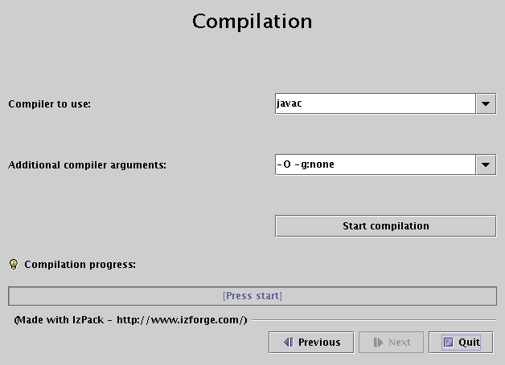

Next: Advanced Features Up: izpack-doc Previous: Getting started Contents
In order to write your XML installation files, you just need a plain text editor. Of course it's always easier to work with color coded text, so you might rather want to work with a text editor having such a feature. Here is a list of free editors that work well :
Though you might not know much about XML, you have certainly heard about
it. If you know XML you can skip this subsection as we will briefly
present how to use XML.
XML is a markup language, really close to HTML. If you've ever worked with HTML the transition will be fast. However there are a few little things to know. The markups used in XML have the following form : <markup>. Each markup has to be closed somewhere with its ending tag : </markup>. Each tag can contain text and other markups. If a markup does not contain anything, it is just reported once : <markup/>. A markup can contain attributes like : <markup attr1="123" attr2="hello !"/>. Here is a sample of a valid XML structure :
<chapter title="Chapter 1">
<section name="Introduction">
<paragraph>
This is the text of the paragraph number 1. It is available for the very low
price of <price currency="dollar">1 000 000</price>.
</paragraph>
</section>
<section name="xxx">
xxx
</section>
</chapter>
You should be aware of the following common mistakes :
Also, an XML file must start with the following header :
<?xml version="1.0" encoding="iso-8859-1 standalone="yes" ?>. The only
thing you should modify is the encoding (put here the one your text editor saves
your files to). The standalone attribute is not very important for
us.
This (brief !) introduction to XML was just meant to enable you to write
your installation specification. For a better introduction there are
plenty of books and articles/tutorials dealing with XML on the Internet,
in book stores, in magazines and so on.
During the installation process IzPack can substitute variables in
various places with real values. Obvious targets for variable
substitution are resource files and launch scripts, however you will
notice many more places where it is more powerful to use variables
rather then hard coded values. Wherever variables can be used it will
be explained in the documentation.
There are two types of variables:
You define your own variables in the installation XML file with the
<variable> tag. How to do this is explained in detail later in
this chapter.
Please note that when using variables they must always appear
with a '$' sign as the first character, even though they are
not defined this way.
When writing your installer XML files, it's a good idea to have a look
at the IZPACK installation DTD.
The root element of an installation is <installation>. It takes
one required attribute : version. The attribute defines the
version of the XML file layout and is used by the compiler to identify
if it is compatible with the XML file. This should be set to for
the moment.
This element is used to specify some general information for the installer. It contains the following elements :
Here is an example of a typical <info> section :
<info>
<appname>Super extractor</appname>
<appversion>2.1 beta 6</appversion>
<url>http://www.superextractor.com/</url>
<authors>
<author name="John John Doo" email="jjd@jjd-mail.com"/>
<author name="El Goyo" email="goyoman@mymail.org"/>
</authors>
<javaversion>1.2</javaversion>
</info>
This element allows you to define variables for the variables substitution system. Some variables are built-in, such as $INSTALL_PATH (which is the installation path chosen by the user). When you define a set of variables, you just have to place as many <variable> tags in the file as needed. If you define a variable named VERSION you need to type $VERSION in the files to parse. The variable substitutor will then replace it with the correct value. One <variable> tag take the following attributes :
Here's a sample <variables> section :
<variables> <variable name="app-version" value="1.4"/> <variable name="released-on" value="08/03/2002"/> </variables>
This element allows you to set the behavior of your installer GUI. This information will not have any effect on the command-line installers that will be available in future versions of IZPACK . The arguments to specify are :
Here's a sample :
<guiprefs resizable="no" width="800" height="600"/>
Starting from IzPack 3.6, the look and feel can be specified in this section on a per-OS basis. For instance you can use the native look and feels on Win32 and OS X but use a third-party one on Unix-like platforms. To do that, you have to add some children to the guiprefs tag:
The available look and feels are:
If you don't specify a look and feel for a particular operating system, then the
default native one will be used: Windows on Windows, Aqua on Mac OS X and Metal
on the Unix-like variants.
The Liquid Look and Feel supports the following parameters:
The JGoodies Looks look and feel can be specified by using the variant parameters. The values can be one of:
Here is a small sample:
<guiprefs height="600" resizable="yes" width="800">
<laf name="metouia">
<os family="unix" />
</laf>
<laf name="looks">
<os family="windows" />
<param name="variant" value="extwin" />
</laf>
</guiprefs>
This element is used to specify the language packs (langpacks) that you want to
use for your installer. You must set one <langpack> markup per
language. This markup takes the iso3 parameter which specifies the iso3
language code.
Here's a sample :
<locale> <langpack iso3="eng"/> <langpack iso3="fra"/> <langpack iso3="spa"/> </locale>
The supported ISO3 codes are :
| ISO3 code | Language |
|---|---|
| cat | Catalunyan |
| dan | Danish |
| deu | German |
| eng | English |
| fin | Finnish |
| fra | French |
| hun | Hungarian |
| ita | Italian |
| jpn | Japanese |
| ned | Nederlands |
| pol | Polnish |
| por | Portuguese (Brazilian) |
| rom | Romanian |
| rus | Russian |
| spa | Spanish |
| svk | Slovakian |
| swe | Swedish |
| ukr | Ukrainian |
Several panels, such as the license panel and the shortcut panel,
require additional data to perform their task. This data is supplied
in the form of resources. This section describes how to specify
them. Take a look at each panel description to see if it might need
any resources. Currently, no checks are made to ensure resources
needed by any panel have been included. The <resources>
element is not required, and no <res> elements are required
within.
You have to set one <res> markup for each resource. Here are the attributes to specify :
Here's a sample :
<resources> <res id="InfoPanel.info" src="doc/readme.txt" parse="yes"/> <res id="LicencePanel.licence" src="legal/License.txt"/> </resources>
Here you tell the compiler which panels you want to use. They will
appear in the installer in the order in which they are listed in your
XML installation file. Take a look at the different panels in order to
find the ones you need. The <panel> markup takes a single
attribute classname which is the classname of the panel.
Here's a sample :
<panels> <panel classname="HelloPanel"/> <panel classname="LicencePanel"/> <panel classname="TargetPanel"/> <panel classname="InstallPanel"/> <panel classname="FinishPanel"/> </panels>
This is a crucial section as it is used to specify the files that need to be installed. The <packs> section consists of several <pack> tags.
The <pack> takes the following attributes :
The following sections describe the tags available for a <pack> section.
The contents of the <description> tag describe the pack contents. This description is displayed if the user highlights the pack during installation.
It is possible to restrict a panel to a certain list of operating systems. This tag takes the following attributes:
This feature can update an already installed package, therefore removing superfluous files after installation. Here's how this feature author (Tino Schwarze) described it on the IzPack development mailing-list:
Each pack can now specify an <updatecheck> tag. It supports a subset of ant fileset syntax, e.g.:
<updatecheck> <include name="lib/**" /> <exclude name="config/local/** /> </updatecheck>
If the paths are relative, they will be matched relative to $INSTALL_PATH. Update checks are only enabled if at least one <include> is specified. See com.izforge.izpack.installer.Unpacker for details.
The <file> tag specifies a file (a directory is a file too) to include into the pack. It takes the following attributes:
Specifies a single file to include. The difference to <file> is that this tag allows the file to be renamed, therefore it has a target attribute instead of targetdir.
The <fileset> tag allows files to be specified using the powerful Jakarta Ant set syntax. It takes the following parameters:
You specify the files with <include> and <exclude> tags that take the name parameter to specify the Ant-like pattern :
There area set of definitions that are excluded by default file-sets, just as in Ant. IzPack defaults to the Ant list of default excludes. There is currently no equivalent to the <defaultexcludes> task. Default excludes are:
**/*\~{}
**/\#*\#
**/.\#*
**/%*%
**/.\_*
**/CVS
**/CVS/**
**/.cvsignore
**/SCCS
**/SCCS/**
**/vssver.scc
**/.svn
**/.svn/**
**/.DS\_Store
Files specified by <parsable> are parsed after installation and may have variables substituted.
The <executable> tag is a very useful thing if you need to execute something during the installation process. It can also be used to set the executable flag on Unix-like systems. Here are the attributes :
The <os> tag can be used inside the <file>, <fileset>, <singlefile>, <parsable>, <executable> tags to restrict it's effect to a specific operating system family, architecture or version:
Here's an example installation file :
<packs>
<!-- The core files -->
<pack name="Core" required="yes">
<description>The IzPack core files.</description>
<file targetdir="$INSTALL_PATH" src="bin"/>
<file targetdir="$INSTALL_PATH" src="lib"/>
<file targetdir="$INSTALL_PATH" src="legal"/>
<file targetdir="$INSTALL_PATH" src="Readme.txt"/>
<file targetdir="$INSTALL_PATH" src="Versions.txt"/>
<file targetdir="$INSTALL_PATH" src="Thanks.txt"/>
<parsable targetfile="$INSTALL_PATH/bin/izpack-fe"/>
<parsable targetfile="$INSTALL_PATH/bin/izpack-fe.bat"/>
<parsable targetfile="$INSTALL_PATH/bin/compile"/>
<parsable targetfile="$INSTALL_PATH/bin/compile.bat"/>
<executable targetfile="$INSTALL_PATH/bin/compile" stage="never"/>
<executable targetfile="$INSTALL_PATH/bin/izpack-fe" stage="never"/>
</pack>
<!-- The documentation (1 directory) -->
<pack name="Documentation" required="no">
<description>The IzPack documentation (HTML and PDF).</description>
<file targetdir="$INSTALL_PATH" src="doc"/>
</pack>
</packs>
Use this if you want to use a feature that requires a native library. The native libraries are placed under bin/native/... There are 2 kinds of native libraries : the IZPACK libraries and the third-party ones. The IzPack libraries are located at bin/native/izpack, you can place your own libraries at bin/native/3rdparty. The markup takes the following attributes :
Here's a sample :
<native type="izpack" name="ShellLink.dll"/>
If you adapt IZPACK for your own needs, you might need to merge the
content of another jar file into the jar installer. For instance, this
could be a library that you need to merge. The <jar> markup
allows you to merge the raw content of another jar file, specified by
the src attribute.
A sample :
<jar src="../nicelibrary.jar"/>
In this section I will introduce the various panels available in IzPack.
The usage for most is pretty simple and described right here. The more
elaborate ones are explained in more detail in the Advanced
Features chapter or in their own chapter. The panels are listed by
their class name. This is the name that must be used with the
classname attribute (case-sensitive).
This panel welcomes the user by displaying the project name, the
version, the URL as well as the authors.
This is a kind of 'README' panel. It presents text of any length. The
text is specified by the (HTML)InfoPanel.info resource.
Note : there is a mistake in the name - it should be
LicensePanel. In France the word is Licence ... and one of my diploma is a
'Licence' so ... :-)
These panels can prompt the user to acknowledge a license agreement. They block
unless the user selects the 'agree' option. To specify the license agreement
text you have to use the (HTML)LicencePanel.licence resource.
Allows the user to select the packs he wants to install.
This is the same as above, but for each panel a different picture is
shown to the user. The pictures are specified with the resources
ImgPacksPanel.img.x where x stands for the pack number, the
numbers start from 0. Of course it's up to you to specify as many images
as needed and with correct numbers. For instance if you have 2 packs
core and documentation (in this order), then the resource for
core will be ImgPacksPanel.img.0 and the resource for
doc will be ImgPacksPanel.img.1. The supported image formats
depend on what you JVM supports, but starting from J2SE 1.3, GIF,
JPEG and PNG are supported.
This panel allows the user to select the installation path. It can be customized with the following resources (they are text files containing the path) :
You should always have this one as it launches the installation process !
A panel showing text parsed by the variable substitutor. The text can be
specified through the XInfoPanel.info resource. This panel can
be useful when you have to show information after the installation
process is completed (for instance if the text contains the target
path).
A ending panel, able to write automated installer information. For
details see the chapter on 'Advanced Features'.
Same as FinishPanel, but without the automated installer features. It
is aimed at making the life easier for end-users who will never encounter the
automated installer extra feature.
This panel is used to create desktop shortcuts. For details on using the ShortcutPanel see the chapter 'Desktop Shortcuts'.
This panel allows you to prompt the user for data. What the user is prompted
for is specified using an XML file which is included as a resource to the
installer. See chapter 6 on page ![[*]](crossref.png) for a detailed explanation.
for a detailed explanation.
This panel allows you to compile just installed Java sourcecode. The details for the compilation are specified using the resource CompilePanel.Spec.xml. The XML file has the following format:
<compilation>
<global>
<compiler>
<choice value="$JAVA_HOME/bin/javac" />
<choice value="jikes" />
</compiler>
<arguments>
<choice value="-O -g:none" />
<choice value="-O" />
<choice value="-g" />
<choice value="" />
</arguments>
</global>
<jobs>
<classpath add="$INSTALL_PATH/src/classes/" />
<job name="optional name">
<directory name="$INSTALL_PATH/src/classes/xyz" />
</job>
<job name="another job">
<packdepency name="some package name" />
<classpath sub="$INSTALL_PATH/" />
<directory name="$INSTALL_PATH/src/classes/abc" />
<file name="$INSTALL_PATH/some/file.java" />
</job>
</jobs>
</compilation>
In theory, jobs can be nested but this has not been tested at all. A change to the classpath within a job only affects this job and nested jobs. The classpath should be specified before any files or directories.
The user can change the compiler to use and choose from some default compilation options before compilation is started.

This panel allows you to execute arbitrary files after installation. The details for the compilation are specified using the resource ProcessPanel.Spec.xml.
The XML file has the following format:
<processing>
<job name="do xyz">
<os family="windows" />
<executefile name="$INSTALL_PATH/scripts/xyz.bat">
<arg>doit</arg><arg>$variable</arg>
</executefile>
</job>
<job name="do xyz">
<os family="unix" />
<executefile name="$INSTALL_PATH/scripts/xyz.sh">
<arg>doit</arg><arg>$variable</arg>
</executefile>
</job>
</processing>
Each job may have an <os> attribute - see 2.3.8 for details.
It is also possible to execute Java classes from this panel. Here's what this feature author (Alex Bradley) says:
I've been able to work around my requirements by extending the ProcessPanelWorker functionality to run user-specified classes. I've extended the DTD of the ProcessPanel.Spec.xml to include a new element:
<executableclass name="classname"> <args..../> </executable>
I've also added a new sub-class of Processable called ExecutableClass. This will run a user-specified class in the context of the installer JVM with a single method :
run( AbstractUIHandler handler, String[] args]);
It can do everything I need and more. In particular, it allows me to write a process extension and still be able to provide feedback to the user through the feedback panel, and to add new functionality to the installer, after its been built.Julien Ponge 2004-07-28